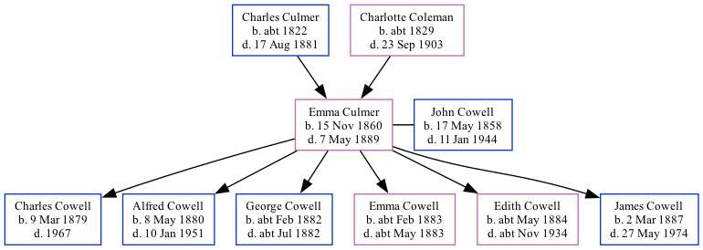

Emma Cowell (née Culmer) 1860 - 1889
[ Home ] | [ Calendar ] | [ Surnames Index ] | [ Family History ]The daughter of Charles Culmer (a farm waggoner) and Charlotte Coleman (a pauper), Emma Culmer, the great-grandmother of Nigel Horne, was born in Monkton, Kent, England on Nov 15, 18601,2,3,4,5,6,7,8, was baptized there at St Mary Magdalene Church, Monkton St. on Jan 13, 1861 and married John Cowell (a farm waggoner with whom she had 6 children: Charles Percy, Alfred John, George Troward, Emma Jane, Edith Eliza and James Frederick) at All Saints Church, Westbere, Kent, England on Feb 8, 187910.
Throughout her life, Emma lived in several places: on Monkton Street in Monkton on Apr 7, 18611; at The Street, St Nicholas-at-Wade, Kent on Apr 2, 187112; and at Wayborough, Minster, Thanet, Kent on Apr 3, 188113.
She died on May 7, 1889 in Upstreet, Kent6,7,8,9 (plithisis) and was buried at St Mary the Virgin, Chislet, Kent on May 11, 188911.
Parents
- Charles was born c. 1822
- Charlotte was born c. 1829
Children
- Charles Percy was born on Mar 9, 1879
- Alfred John was born on May 8, 1880
- George Troward was born c. Feb 1882
- Emma Jane was born c. Feb 1883
- Edith Eliza was born c. May 1884
- James Frederick was born on Mar 2, 1887
Citations
- 1861 England Census Online publication - Provo, UT, USA: The Generations Network, Inc., 2005.Original data - Census Returns of England and Wales, 1861. Kew, Surrey, England: The National Archives of the UK (TNA): Public Record Office (PRO), 1861. Data imaged from the National
- 1871 England Census Online publication - Provo, UT, USA: The Generations Network, Inc., 2004.Original data - Census Returns of England and Wales, 1871. Kew, Surrey, England: The National Archives of the UK (TNA): Public Record Office (PRO), 1871. Data imaged from the National
- 1881 England Census Online publication - Provo, UT, USA: The Generations Network, Inc., 2004. 1881 British Isles Census Index provided by The Church of Jesus Christ of Latter-day Saints © Copyright 1999 Intellectual Reserve, Inc. All rights reserved. All use is subject to the
- England & Wales births 1837-2006 - Findmypast
- England & Wales, FreeBMD Birth Index, 1837-1915 Online publication - Provo, UT, USA: The Generations Network, Inc., 2006.Original data - General Register Office. England and Wales Civil Registration Indexes. London, England: General Register Office. © Crown copyright. Published by permission of the Cont
- England & Wales, FreeBMD Death Index: 1837-1915 Online publication - Provo, UT, USA: The Generations Network, Inc., 2006.Original data - General Register Office. England and Wales Civil Registration Indexes. London, England: General Register Office. © Crown copyright. Published by permission of the Cont
- England, Select Deaths and Burials, 1538-1991 Ancestry.com Operations, Inc.
- Public Member Trees Online publication - Provo, UT, USA: The Generations Network, Inc., 2006.Original data - Family trees submitted by Ancestry members.Original data: Family trees submitted by Ancestry members.
- England & Wales deaths 1837-2007 - Findmypast
- England & Wales, FreeBMD Marriage Index: 1837-1915 Online publication - Provo, UT, USA: The Generations Network, Inc., 2006.Original data - General Register Office. England and Wales Civil Registration Indexes. London, England: General Register Office. © Crown copyright. Published by permission of the Cont
- Kent, Canterbury Archdeaconry Burials - Findmypast
- 1871 England, Wales & Scotland Census - Findmypast (was age 10 and the daughter of the head of the household)
- 1881 England, Wales & Scotland Census - Findmypast (was age 20 and the wife of the head of the household)
Media
Emma Culmer - Birth Certificate
John Cowell - Elizabeth Culmer - Marriage Certificate

Emma Culmer - Death Certificate

England Marriages 1538-1973 - R_848236700/2
England & Wales marriages 1837-2008 - BMD/M/1879/1/AZ/000048/129
England & Wales deaths 1837-2007 - BMD/D/1889/2/AZ/000072/362
Canterbury Burials - GBPRS/CANT/D/95075852
England Deaths & Burials 1538-1991 - R_276280752
England & Wales births 1837-2006 - BMD/B/1860/4/AZ/000235/137
1871 England, Wales & Scotland Census - GBC/1871/0014272136
Kent Baptisms - GBPRS/CANT/B/96476563
England Births & Baptisms 1538-1975 - R_884575030
England Births & Baptisms 1538-1975 - R_938004297
Family Tree
Generated by Ged2Site. Last updated on Jul 20, 2025